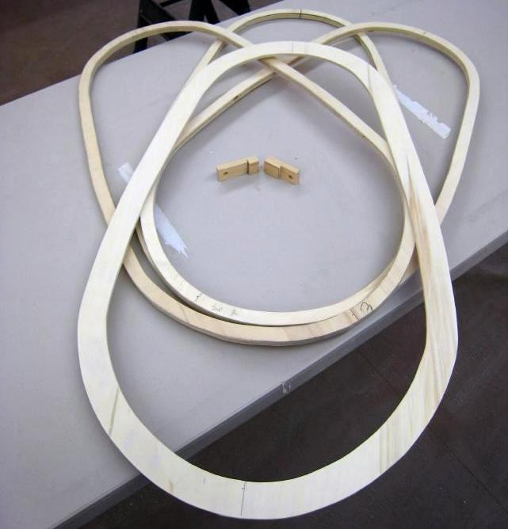

| Coaming | Menu Previous Page Next Page |
|

The 30" X 16"(ID) coaming of the Sea Bee is comprised of three 3/4" X 1/2" rings and one 1.5" X 1/4" coaming lip. One of the smaller rings serves as the base plate and is epoxied to the boat. The 2 remaining rings and the coaming lip are epoxied together and are bolted to the base plate.
|
|